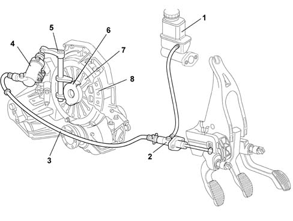

Introduction - CLUTCH
- Path
- Descriptions > 18 CLUTCH > Introduction - CLUTCH
- Kind
- system description
- Applies to
- all engines; all production periods
- Interactive page
- https://sloeber94.github.io/elrnDB-lYpsln/en/#/2429842
Applies to: all engines; all production periods
The clutch is the dry, single plate type with a thrust bearing always in contact with the flexible coupling spring.
The driven disc is driven by the pressure exerted by a diaphram spring. The clutch release is activated through the hydrauilc system operated by the pedal.
Applies to: all engines; all production periods
The system consists of:
- a clutch pump (master cylinder) (2), which has the task of compressing the fluid and is fixed to the pedals;
- a connecting pipe (3) between the pump and the clutch operating cylinder;
- a clutch operating cylinder (4) fixed to the gearbox;
- linkage (5) operating the thrust bearing;
- a thrust bearing (6);
a clutch drip tray with diaphragm springs (7);
a clutch plate (8);
a fluid reservoir (1) shared with the braking system.

1 - Brake/clutch fluid reservoir 2 - Clutch pump 3 - Connecting pipe between pump and cylinder 4 - Clutch operating cylinder 5 - Linkage 6 - Thrust bearing 7 - Diaphragm spring 8 - Clutch plate
Applies to: all engines; all production periods
The pump (2), operated by the clutch pedal, pressurizes the hydraulic circuit and activates the clutch operating cylinder (4).
The latter acts on the operaating linkage (5), which 'pulls' the thrust bearing (3), overcoming the action of the pressure plate springs (7).
This action uncouples the clutch plate (8) from the flywheel.
When the pedal is released, the action of the diaphragm springs (7) returns the mechanism to the original position.